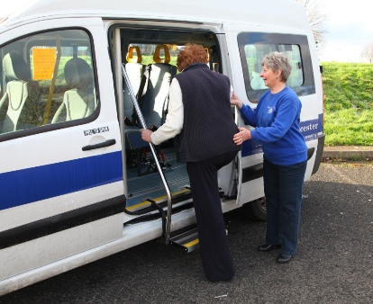

A Few Words About Us
A Few Words About Us
QucikCabs is the one-stop transportation service and makes transportation easy for the old and disabled people.
We offer convenient car sharing service for the senior citizens and disabled people.We provide instant online booking, affordable taxicab rates, and friendly service.
We offer convenient car sharing service for the senior citizens and disabled people.We provide instant online booking, affordable taxicab rates, and friendly service.
Our Commitment to Customers
QucikCabs promises to offer our customers superior quality and service. That means:
QucikCabs promises to offer our customers superior quality and service. That means:
- The fare will be correct and fair
- The vehicle will be clean, inside and out
- The response to all calls will be prompt
- The driver will be polite, helpful, and offer assistance if requested
- The vehicle will have passed all safety inspections prior to accepting passengers
- The vehicles will be properly licensed and insured
- The driver will have attended all prerequisite and periodic training as well as be properly licensed and insured
This commitment to safe service also means that:
Why Choose Us
- 1
-
Fast and SafeQucikCabs makes ride sharing easy, safe, and convenient for both drivers and passengers.
- 2
-
Best PricesWe offer best fares for transportation. The charges for transportation must be computed by the taximeter and they are fairly low.
- 3
-
VIP Treatment for EveryoneAt QucikCabs, every one of our clients gets the VIP treatment, regardless if you're a one-time traveller or a regular client.
- 4
-
Best ServiceOur drivers display a positive attitude, handle baggage carefully,and our standards for clean, well-maintained vehicles.We also provide special attention for the disabled people.
Testimonials
Amazing taxi service for the senior citizens. The driver was very prompt and very friendly. I cannot believe the service I've gotten with this company. If you are near Stony Brooks area, this is the taxi service to call!
Tim Barkley
It's really good for old people. The driver was very kind and he displayed courtesy to disabled people. The car also contains certain equipments like wheel chairs etc to help physically handicapped people.
Linda Grey
I often ride with QuickCabs and they are always extremely professional and on time. There is no comparison to the high level of prompt service that I get every time I book QucikCabs Cab. I strongly recommend!
Ann Pool